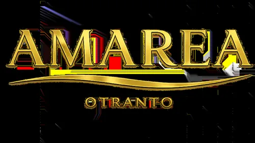
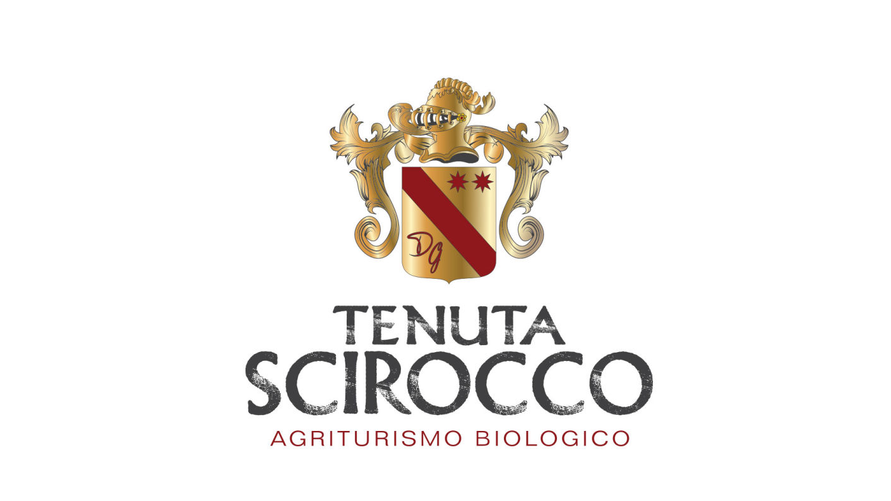

Maison de Vacances · Otranto, Selva del Turchese
Maison de Vacances · Otranto, Selva del Turchese
Nos recommandations dans le Salento, et les événements à venir à Otrante.
Quelques adresses que nous recommandons volontiers à nos hôtes — cette liste s'enrichira avec le temps.

Restaurant de poissons et pizzeria au cœur d'Otrante : crudos frais, plats de la mer et spécialités méditerranéennes, dans une ambiance élégante et conviviale.
Pizzeria et restaurant sur la Piazzetta Idro, près du centre historique : pizza à longue fermentation et poisson frais du Salento, options sans gluten disponibles.
Une trattoria pugliese chaleureuse : pêche du jour, produits de la terre et de la mer, entre tradition familiale et cuisine créative.

Agritourisme biologique en pleine nature, avec piscine, restaurant typique salentin, pizzeria au feu de bois et miel de production propre.
Location de voitures sans chauffeur avec kilométrage illimité et assurance incluse, service taxi et transfert, location de scooters et visites guidées en Ape Calessino.
Une sélection d'événements à venir en ville, choisis et mis à jour par nos soins.
Spectacle immersif de vidéo-mapping dans le centre historique : les façades s'animent de lumières et de sons, chaque soir de 21h à minuit. Entrée gratuite.
En savoir plus →Marché d'antiquités, vintage et brocante le long du Lungomare Kennedy.
La traditionnelle fête des vendanges, avec dégustations et produits locaux.
Exposition d'art au Château Aragonais : plus de 50 œuvres entre figure, mot et culture pop.
En savoir plus →Fête du Nouvel An sur la place principale puis, à l'aube du 1er janvier, le traditionnel salut au premier lever de soleil d'Italie — Otrante est le point le plus à l'est du pays.
En savoir plus →Pour le programme complet et à jour : Comune di Otranto — https://comune.otranto.le.it/novita/
Vérifier la disponibilité et réserver Prix en temps réel · Confirmation immédiate